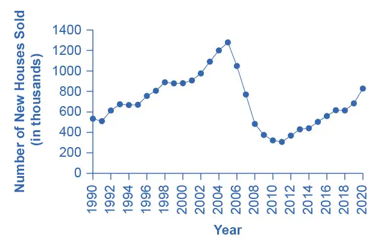
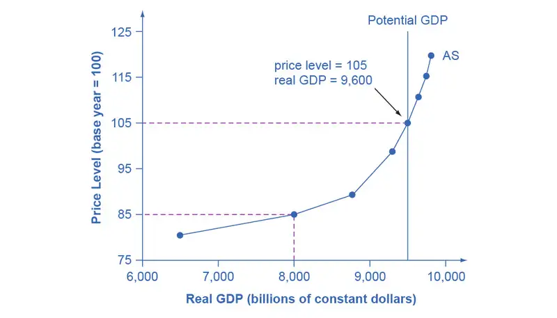
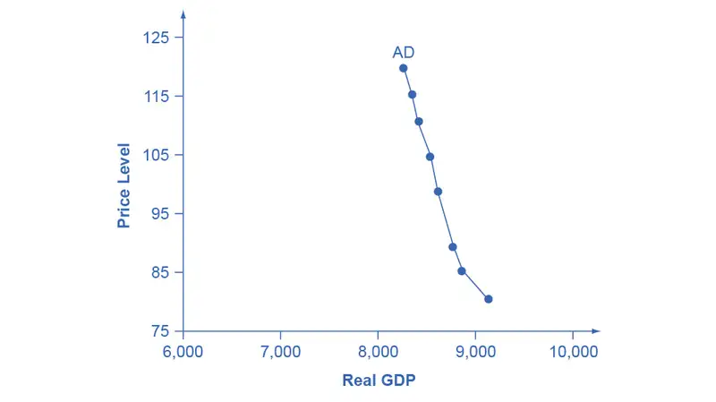
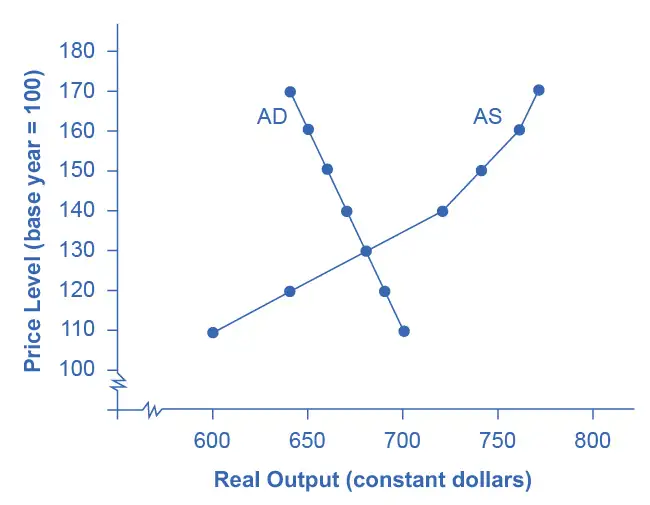
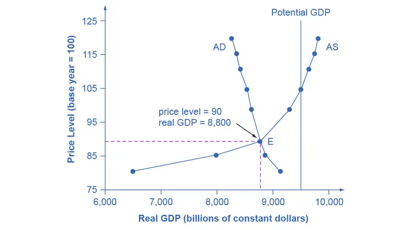
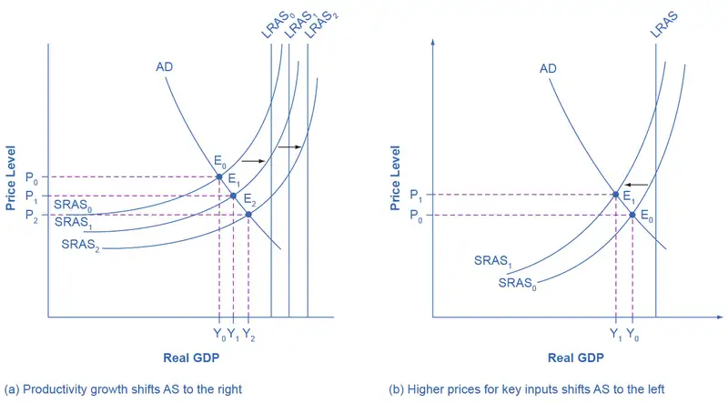
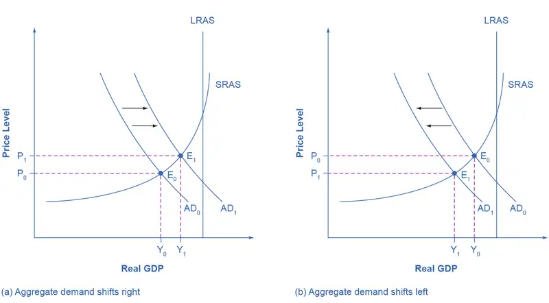
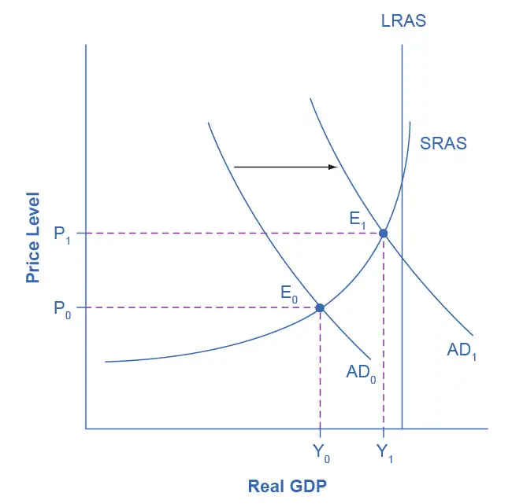
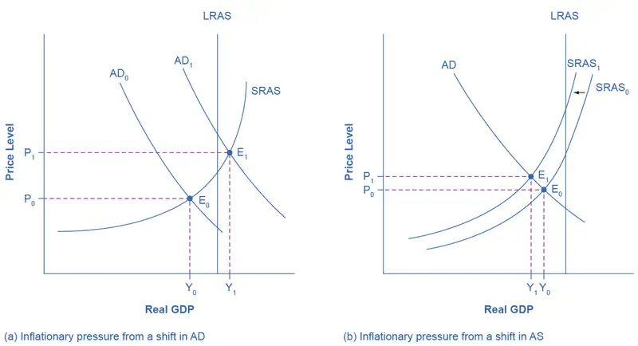
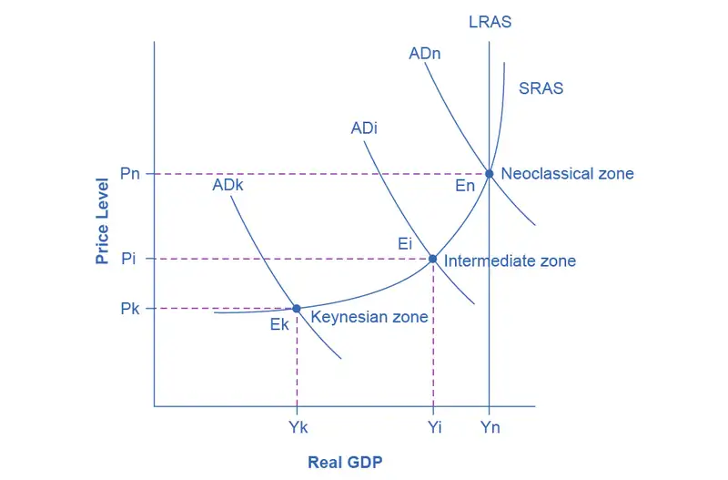

Chapter 24: The Aggregate Demand/Aggregate Supply Model¶
Introduction¶
Bring It Home: From Housing Bubble to Housing Bust
The United States experienced rising home ownership rates for most of the last two decades. Between 1990 and 2006, the U.S. housing market grew. Homeownership rates grew from 64% to a high of over 69% between 2004 and 2005. For many people, this was a period in which they could either buy first homes or buy a larger and more expensive home. During this time mortgage values tripled. Housing became more accessible to Americans and was considered to be a safe financial investment. Figure 24.2 shows how new single family home sales peaked in 2005 at 1,279,000 units.

The housing bubble began to show signs of bursting in 2005, as delinquency and late payments began to grow and an oversupply of new homes on the market became apparent. Dropping home values contributed to a decrease in the overall wealth of the household sector and caused homeowners to pull back on spending. Several mortgage lenders were forced to file for bankruptcy because homeowners were not making their payments, and by 2008 the problem had spread throughout the financial markets. Lenders clamped down on credit and the housing bubble burst. Financial markets were now in crisis and unable or unwilling to even extend credit to credit-worthy customers.
The housing bubble and the crisis in the financial markets were major contributors to the Great Recession that led to unemployment rates over 10% and falling GDP. While the United States is still recovering from the impact of the Great Recession, it has made substantial progress in restoring financial market stability through implementing aggressive fiscal and monetary policy.
The economic history of the United States is cyclical in nature with recessions and expansions. Some of these fluctuations are severe, such as the economic downturn that occurred during the Great Depression in the 1930s which lasted several years. Why does the economy grow at different rates in different years? What are the causes of the cyclical behavior of the economy? This chapter will introduce an important model, the aggregate demand–aggregate supply model, to begin our understanding of why economies expand and contract over time.
New One-Family Houses Sold in the United States.
Chapter Outline: Introduction to the Aggregate Supply–Aggregate Demand Model
In this chapter, you will learn about:
- Macroeconomic Perspectives on Demand and Supply
- Building a Model of Aggregate Supply and Aggregate Demand
- Shifts in Aggregate Supply
- Shifts in Aggregate Demand
- How the AS–AD Model Incorporates Growth, Unemployment, and Inflation
- Keynes’ Law and Say’s Law in the AS–AD Model
A key part of macroeconomics is the use of models to analyze macro issues and problems. How is the rate of economic growth connected to changes in the unemployment rate? Is there a reason why unemployment and inflation seem to move in opposite directions: lower unemployment and higher inflation from 1997 to 2000, higher unemployment and lower inflation in the early 2000s, lower unemployment and higher inflation in the mid-2000s, and then higher unemployment and lower inflation in 2009? Why did the current account deficit rise so high, but then decline in 2009?
To analyze questions like these, we must move beyond discussing macroeconomic issues one at a time, and begin building economic models that will capture the relationships and interconnections between them. The next three chapters take up this task. This chapter introduces the macroeconomic model of aggregate supply and aggregate demand, how the two interact to reach a macroeconomic equilibrium, and how shifts in aggregate demand or aggregate supply will affect that equilibrium. This chapter also relates the model of aggregate supply and aggregate demand to the three goals of economic policy (growth, unemployment, and inflation), and provides a framework for thinking about many of the connections and tradeoffs between these goals. The chapter on The Keynesian Perspective focuses on the macroeconomy in the short run, where aggregate demand plays a crucial role. The chapter on The Neoclassical Perspective explores the macroeconomy in the long run, where aggregate supply plays a crucial role.
24.1 Macroeconomic Perspectives on Demand and Supply¶
Learning Objectives
By the end of this section, you will be able to:
- Explain Say’s Law and understand why it primarily applies in the long run
- Explain Keynes’ Law and understand why it primarily applies in the short run
Macroeconomists over the last two centuries have often divided into two groups: those who argue that supply is the most important determinant of the size of the macroeconomy while demand just tags along, and those who argue that demand is the most important factor in the size of the macroeconomy while supply just tags along.
Say’s Law and the Macroeconomics of Supply¶
Those economists who emphasize the role of supply in the macroeconomy often refer to the work of a famous early nineteenth century French economist named Jean-Baptiste Say (1767–1832). Say’s law is: “Supply creates its own demand.” As a matter of historical accuracy, it seems clear that Say never actually wrote down this law and that it oversimplifies his beliefs, but the law lives on as useful shorthand for summarizing a point of view.
The intuition behind Say’s law is that each time a good or service is produced and sold, it generates income that is earned for someone: a worker, a manager, an owner, or those who are workers, managers, and owners at firms that supply inputs along the chain of production. We alluded to this earlier in our discussion of the National Income approach to measuring GDP. The forces of supply and demand in individual markets will cause prices to rise and fall. The bottom line remains, however, that every sale represents income to someone, and so, Say’s law argues, a given value of supply must create an equivalent value of demand somewhere else in the economy. Because Jean-Baptiste Say, Adam Smith, and other economists writing around the turn of the nineteenth century who discussed this view were known as “classical” economists, modern economists who generally subscribe to the Say’s law view on the importance of supply for determining the size of the macroeconomy are called neoclassical economists.
If supply always creates exactly enough demand at the macroeconomic level, then (as Say himself recognized) it is hard to understand why periods of recession and high unemployment should ever occur. To be sure, even if total supply always creates an equal amount of total demand, the economy could still experience a situation of some firms earning profits while other firms suffer losses. Nevertheless, a recession is not a situation where all business failures are exactly counterbalanced by an offsetting number of successes. A recession is a situation in which the economy as a whole is shrinking in size, business failures outnumber the remaining success stories, and many firms end up suffering losses and laying off workers.
Say’s law that supply creates its own demand does seem a good approximation for the long run. Over periods of some years or decades, as the productive power of an economy to supply goods and services increases, total demand in the economy grows at roughly the same pace. However, over shorter time horizons of a few months or even years, recessions or even depressions occur in which firms, as a group, seem to face a lack of demand for their products.
Keynes’ Law and the Macroeconomics of Demand¶
The alternative to Say’s law, with its emphasis on supply, is Keynes’ law: “Demand creates its own supply.” As a matter of historical accuracy, just as Jean-Baptiste Say never wrote down anything as simpleminded as Say’s law, John Maynard Keynes never wrote down Keynes’ law, but the law is a useful simplification that conveys a certain point of view.
When Keynes wrote his influential work The General Theory of Employment, Interest, and Money during the 1930s Great Depression, he pointed out that during the Depression, the economy's capacity to supply goods and services had not changed much. U.S. unemployment rates soared higher than 20% from 1933 to 1935, but the number of possible workers had not increased or decreased much. Factories closed, but machinery and equipment had not disappeared. Technologies that had been invented in the 1920s were not un-invented and forgotten in the 1930s. Thus, Keynes argued that the Great Depression—and many ordinary recessions as well—were not caused by a drop in the ability of the economy to supply goods as measured by labor, physical capital, or technology. He argued the economy often produced less than its full potential, not because it was technically impossible to produce more with the existing workers and machines, but because a lack of demand in the economy as a whole led to inadequate incentives for firms to produce. In such cases, he argued, the level of GDP in the economy was not primarily determined by the potential of what the economy could supply, but rather by the amount of total demand.
Keynes’ law seems to apply fairly well in the short run of a few months to a few years, when many firms experience either a drop in demand for their output during a recession or so much demand that they have trouble producing enough during an economic boom. However, demand cannot tell the whole macroeconomic story, either. After all, if demand was all that mattered at the macroeconomic level, then the government could make the economy as large as it wanted just by pumping up total demand through a large increase in the government spending component or by legislating large tax cuts to push up the consumption component. Economies do, however, face genuine limits to how much they can produce, limits determined by the quantity of labor, physical capital, technology, and the institutional and market structures that bring these factors of production together. These constraints on what an economy can supply at the macroeconomic level do not disappear just because of an increase in demand.
Combining Supply and Demand in Macroeconomics¶
Two insights emerge from this overview of Say’s law with its emphasis on macroeconomic supply and Keynes’ law with its emphasis on macroeconomic demand. The first conclusion, which is not exactly a hot news flash, is that an economic approach focused only on the supply side or only on the demand side can be only a partial success. We need to take into account both supply and demand. The second conclusion is that since Keynes’ law applies more accurately in the short run and Say’s law applies more accurately in the long run, the tradeoffs and connections between the three goals of macroeconomics may be different in the short run and the long run.
24.2 Building a Model of Aggregate Demand and Aggregate Supply¶
Learning Objectives
By the end of this section, you will be able to:
- Explain the aggregate supply curve and how it relates to real GDP and potential GDP
- Explain the aggregate demand curve and how it is influenced by price levels
- Interpret the aggregate demand/aggregate supply model
- Identify the point of equilibrium in the aggregate demand/aggregate supply model
- Define short run aggregate supply and long run aggregate supply
To build a useful macroeconomic model, we need a model that shows what determines total supply or total demand for the economy, and how total demand and total supply interact at the macroeconomic level. We call this the aggregate demand/aggregate supply model. This module will explain aggregate supply, aggregate demand, and the equilibrium between them. The following modules will discuss the causes of shifts in aggregate supply and aggregate demand.
The Aggregate Supply Curve and Potential GDP¶
Firms make decisions about what quantity to supply based on the profits they expect to earn. They determine profits, in turn, by the price of the outputs they sell and by the prices of the inputs, like labor or raw materials, that they need to buy. Aggregate supply (AS) refers to the total quantity of output (i.e. real GDP) firms will produce and sell. The aggregate supply (AS) curve shows the total quantity of output (i.e. real GDP) that firms will produce and sell at each price level.
Figure 24.3 shows an aggregate supply curve. In the following paragraphs, we will walk through the elements of the diagram one at a time: the horizontal and vertical axes, the aggregate supply curve itself, and the meaning of the potential GDP vertical line.

The diagram's horizontal axis shows real GDP—that is, the level of GDP adjusted for inflation. The vertical axis shows the price level, which measures the average price of all goods and services produced in the economy. In other words, the price level in the AD-AS model is what we called the GDP Deflator in The Macroeconomic Perspective. Remember that the price level is different from the inflation rate. Visualize the price level as an index number, like the Consumer Price Index, while the inflation rate is the percentage change in the price level over time.
As the price level rises, real GDP rises as well. Why? The price level on the vertical axis represents prices for final goods or outputs bought in the economy—i.e. the GDP deflator—not the price level for intermediate goods and services that are inputs to production. Thus, the AS curve describes how suppliers will react to a higher price level for final outputs of goods and services, while holding the prices of inputs like labor and energy constant. If firms across the economy face a situation where the price level of what they produce and sell is rising, but their costs of production are not rising, then the lure of higher profits will induce them to expand production. In other words, an aggregate supply curve shows how producers as a group will respond to an increase in aggregate demand.
An AS curve's slope changes from nearly flat at its far left to nearly vertical at its far right. At the far left of the aggregate supply curve, the level of output in the economy is far below potential GDP, which we define as the amount of real GDP an economy can produce by fully employing its existing levels of labor, physical capital, and technology, in the context of its existing market and legal institutions. At these relatively low levels of output, levels of unemployment are high, and many factories are running only part-time, or have closed their doors. In this situation, a relatively small increase in the prices of the outputs that businesses sell—while assuming no rise in input prices—can encourage a considerable surge in the quantity of aggregate supply because so many workers and factories are ready to swing into production.
As the GDP increases, however, some firms and industries will start running into limits: perhaps nearly all of the expert workers in a certain industry will have jobs or factories in certain geographic areas or industries will be running at full speed. In the AS curve's intermediate area, a higher price level for outputs continues to encourage a greater quantity of output—but as the increasingly steep upward slope of the aggregate supply curve shows, the increase in real GDP in response to a given rise in the price level will not be as large. (Read the following Clear It Up feature to learn why the AS curve crosses potential GDP.)
Clear It Up: Why does AS cross potential GDP?
Economists typically draw the aggregate supply curve to cross the potential GDP line. This shape may seem puzzling: How can an economy produce at an output level which is higher than its “potential” or “full employment” GDP? The economic intuition here is that if prices for outputs were high enough, producers would make fanatical efforts to produce: all workers would be on double-overtime, all machines would run 24 hours a day, seven days a week. Such hyper-intense production would go beyond using potential labor and physical capital resources fully, to using them in a way that is not sustainable in the long term. Thus, it is possible for production to sprint above potential GDP, but only in the short run.
At the far right, the aggregate supply curve becomes nearly vertical. At this quantity, higher prices for outputs cannot encourage additional output, because even if firms want to expand output, the inputs of labor and machinery in the economy are fully employed. In this example, the vertical line in the exhibit shows that potential GDP occurs at a total output of 9,500. When an economy is operating at its potential GDP, machines and factories are running at capacity, and the unemployment rate is relatively low—at the natural rate of unemployment. For this reason, potential GDP is sometimes also called full-employment GDP.
The Aggregate Demand Curve¶
Aggregate demand (AD) refers to the amount of total spending on domestic goods and services in an economy. (Strictly speaking, AD is what economists call total planned expenditure. We will further explain this distinction in the appendix The Expenditure-Output Model. For now, just think of aggregate demand as total spending.) It includes all four components of demand: consumption, investment, government spending, and net exports (exports minus imports). This demand is determined by a number of factors, but one of them is the price level—recall though, that the price level is an index number such as the GDP deflator that measures the average price of the things we buy. The aggregate demand (AD) curve shows the total spending on domestic goods and services at each price level.
Figure 24.4 presents an aggregate demand (AD) curve. Just like the aggregate supply curve, the horizontal axis shows real GDP and the vertical axis shows the price level. The AD curve slopes down, which means that increases in the price level of outputs lead to a lower quantity of total spending. The reasons behind this shape are related to how changes in the price level affect the different components of aggregate demand. The following components comprise aggregate demand: consumption spending (C), investment spending (I), government spending (G), and spending on exports (X) minus imports (M): C + I + G + X – M.

The wealth effect holds that as the price level increases, the buying power of savings that people have stored up in bank accounts and other assets will diminish, eaten away to some extent by inflation. Because a rise in the price level reduces people’s wealth, consumption spending will fall as the price level rises.
The interest rate effect is that as prices for outputs rise, the same purchases will take more money or credit to accomplish. This additional demand for money and credit will push interest rates higher. In turn, higher interest rates will reduce borrowing by businesses for investment purposes and reduce borrowing by households for homes and cars—thus reducing consumption and investment spending.
The foreign price effect points out that if prices rise in the United States while remaining fixed in other countries, then goods in the United States will be relatively more expensive compared to goods in the rest of the world. U.S. exports will be relatively more expensive, and the quantity of exports sold will fall. U.S. imports from abroad will be relatively cheaper, so the quantity of imports will rise. Thus, a higher domestic price level, relative to price levels in other countries, will reduce net export expenditures.
Among economists all three of these effects are controversial, in part because they do not seem to be very large. For this reason, the aggregate demand curve in Figure 24.4 slopes downward fairly steeply. The steep slope indicates that a higher price level for final outputs reduces aggregate demand for all three of these reasons, but that the change in the quantity of aggregate demand as a result of changes in price level is not very large.
Read the following Work It Out feature to learn how to interpret the AD/AS model. In this example, aggregate supply, aggregate demand, and the price level are given for the imaginary country of Xurbia.
Work It Out: Interpreting the AD/AS Model
Table 24.1 shows information on aggregate supply, aggregate demand, and the price level for the imaginary country of Xurbia. What information does Table 24.1 tell you about the state of the Xurbia’s economy? Where is the equilibrium price level and output level (this is the SR macroequilibrium)? Is Xurbia risking inflationary pressures or facing high unemployment? How can you tell?
Table 24.1 Price Level: Aggregate Demand/Aggregate Supply
| Price Level | Aggregate Demand | Aggregate Supply |
|---|---|---|
| 110 | $700 | $600 |
| 120 | $690 | $640 |
| 130 | $680 | $680 |
| 140 | $670 | $720 |
| 150 | $660 | $740 |
| 160 | $650 | $760 |
| 170 | $640 | $770 |
To begin to use the AD/AS model, it is important to plot the AS and AD curves from the data provided. What is the equilibrium?
Step 1. Draw your x- and y-axis. Label the x-axis Real GDP and the y-axis Price Level.
Step 2. Plot AD on your graph.
Step 3. Plot AS on your graph.
Step 4. Look at Figure 24.5 which provides a visual to aid in your analysis.

Step 5. Determine where AD and AS intersect. This is the equilibrium with price level at 130 and real GDP at $680.
Step 6. Look at the graph to determine where equilibrium is located. We can see that this equilibrium is fairly far from where the AS curve becomes near-vertical (or at least quite steep) which seems to start at about $750 of real output. This implies that the economy is not close to potential GDP. Thus, unemployment will be high. In the relatively flat part of the AS curve, where the equilibrium occurs, changes in the price level will not be a major concern, since such changes are likely to be small.
Step 7. Determine what the steep portion of the AS curve indicates. Where the AS curve is steep, the economy is at or close to potential GDP.
Step 8. Draw conclusions from the given information:
- If equilibrium occurs in the flat range of AS, then economy is not close to potential GDP and will be experiencing unemployment, but stable price level.
- If equilibrium occurs in the steep range of AS, then the economy is close or at potential GDP and will be experiencing rising price levels or inflationary pressures, but will have a low unemployment rate.
Equilibrium in the Aggregate Demand/Aggregate Supply Model¶
The intersection of the aggregate supply and aggregate demand curves shows the equilibrium level of real GDP and the equilibrium price level in the economy. At a relatively low price level for output, firms have little incentive to produce, although consumers would be willing to purchase a large quantity of output. As the price level rises, aggregate supply rises and aggregate demand falls until the equilibrium point is reached.
Figure 24.6 combines the AS curve from Figure 24.3 and the AD curve from Figure 24.4 and places them both on a single diagram. In this example, the equilibrium point occurs at point E, at a price level of 90 and an output level of 8,800.

Confusion sometimes arises between the aggregate supply and aggregate demand model and the microeconomic analysis of demand and supply in particular markets for goods, services, labor, and capital. Read the following Clear It Up feature to gain an understanding of whether AS and AD are macro or micro.
Clear It Up: Are AS and AD macro or micro?
These aggregate supply and demand models and the microeconomic analysis of demand and supply in particular markets for goods, services, labor, and capital have a superficial resemblance, but they also have many underlying differences.
For example, the vertical and horizontal axes have distinctly different meanings in macroeconomic and microeconomic diagrams. The vertical axis of a microeconomic demand and supply diagram expresses a price (or wage or rate of return) for an individual good or service. This price is implicitly relative: it is intended to be compared with the prices of other products (for example, the price of pizza relative to the price of fried chicken). In contrast, the vertical axis of an aggregate supply and aggregate demand diagram expresses the level of a price index like the Consumer Price Index or the GDP deflator—combining a wide array of prices from across the economy. The price level is absolute: it is not intended to be compared to any other prices since it is essentially the average price of all products in an economy. The horizontal axis of a microeconomic supply and demand curve measures the quantity of a particular good or service. In contrast, the horizontal axis of the aggregate demand and aggregate supply diagram measures GDP, which is the sum of all the final goods and services produced in the economy, not the quantity in a specific market.
In addition, the economic reasons for the shapes of the curves in the macroeconomic model are different from the reasons behind the shapes of the curves in microeconomic models. Demand curves for individual goods or services slope down primarily because of the existence of substitute goods, not the wealth effects, interest rate, and foreign price effects associated with aggregate demand curves. The slopes of individual supply and demand curves can have a variety of different slopes, depending on the extent to which quantity demanded and quantity supplied react to price in that specific market, but the slopes of the AS and AD curves are much the same in every diagram (although as we shall see in later chapters, short-run and long-run perspectives will emphasize different parts of the AS curve).
In short, just because the AD/AS diagram has two lines that cross, do not assume that it is the same as every other diagram where two lines cross. The intuitions and meanings of the macro and micro diagrams are only distant cousins from different branches of the economics family tree.
Defining SRAS and LRAS¶
In the Clear It Up feature titled “Why does AS cross potential GDP?” we differentiated between short run changes in aggregate supply which the AS curve shows and long run changes in aggregate supply which the vertical line at potential GDP defines. In the short run, if demand is too low (or too high), it is possible for producers to supply less GDP (or more GDP) than potential. In the long run, however, producers are limited to producing at potential GDP. For this reason, we may also refer to what we have been calling the AS curve as the short run aggregate supply (SRAS) curve. We may also refer to the vertical line at potential GDP as the long run aggregate supply (LRAS) curve.
24.3 Shifts in Aggregate Supply¶
Learning Objectives
By the end of this section, you will be able to:
- Explain how productivity growth changes the aggregate supply curve
- Explain how changes in input prices change the aggregate supply curve
The original equilibrium in the AD/AS diagram will shift to a new equilibrium if the AS or AD curve shifts. When the aggregate supply curve shifts to the right, then at every price level, producers supply a greater quantity of real GDP. When the AS curve shifts to the left, then at every price level, producers supply a lower quantity of real GDP. This module discusses two of the most important factors that can lead to shifts in the AS curve: productivity growth and changes in input prices.
How Productivity Growth Shifts the AS Curve¶
In the long run, the most important factor shifting the AS curve is productivity growth. Productivity means how much output can be produced with a given quantity of labor. One measure of this is output per worker or GDP per capita. Over time, productivity grows so that the same quantity of labor can produce more output. Historically, the real growth in GDP per capita in an advanced economy like the United States has averaged about 2% to 3% per year, but productivity growth has been faster during certain extended periods like the 1960s and the late 1990s through the early 2000s, or slower during periods like the 1970s. A higher level of productivity shifts the AS curve to the right, because with improved productivity, firms can produce a greater quantity of output at every price level. Figure 24.7 (a) shows an outward shift in productivity over two time periods. The AS curve shifts out from SRAS0 to SRAS1 to SRAS2, and the equilibrium shifts from E0 to E1 to E2. Note that with increased productivity, workers can produce more GDP. Thus, full employment corresponds to a higher level of potential GDP, which we show as a rightward shift in LRAS from LRAS0 to LRAS1 to LRAS2.

A shift in the SRAS curve to the right will result in a greater real GDP and downward pressure on the price level, if aggregate demand remains unchanged. However, if this shift in SRAS results from gains in productivity growth, which we typically measure in terms of a few percentage points per year, the effect will be relatively small over a few months or even a couple of years. Recall how in Choice in a World of Scarcity, we said that a nation's production possibilities frontier is fixed in the short run, but shifts out in the long run? This is the same phenomenon using a different model.
How Changes in Input Prices Shift the AS Curve¶
Higher prices for inputs that are widely used across the entire economy can have a macroeconomic impact on aggregate supply. Examples of such widely used inputs include labor and energy products. Increases in the price of such inputs will cause the SRAS curve to shift to the left, which means that at each given price level for outputs, a higher price for inputs will discourage production because it will reduce the possibilities for earning profits. Figure 24.7 (b) shows the aggregate supply curve shifting to the left, from SRAS0 to SRAS1, causing the equilibrium to move from E0 to E1. The movement from the original equilibrium of E0 to the new equilibrium of E1 will bring a nasty set of effects: reduced GDP or recession, higher unemployment because the economy is now further away from potential GDP, and an inflationary higher price level as well. For example, the U.S. economy experienced recessions in 1974–1975, 1980–1982, 1990–91, 2001, and 2007–2009 that were each preceded or accompanied by a rise in the key input of oil prices. In the 1970s, this pattern of a shift to the left in SRAS leading to a stagnant economy with high unemployment and inflation was nicknamed stagflation.
Conversely, a decline in the price of a key input like oil will shift the SRAS curve to the right, providing an incentive for more to be produced at every given price level for outputs. From 1985 to 1986, for example, the average price of crude oil fell by almost half, from $24 a barrel to $12 a barrel. Similarly, from 1997 to 1998, the price of a barrel of crude oil dropped from $17 per barrel to $11 per barrel. In both cases, the plummeting oil price led to a situation like that which we presented earlier in Figure 24.7 (a), where the outward shift of SRAS to the right allowed the economy to expand, unemployment to fall, and inflation to decline.
Along with energy prices, two other key inputs that may shift the SRAS curve are the cost of labor, or wages, and the cost of imported goods that we use as inputs for other products. In these cases as well, the lesson is that lower prices for inputs cause SRAS to shift to the right, while higher prices cause it to shift back to the left. Note that, unlike changes in productivity, changes in input prices do not generally cause LRAS to shift, only SRAS.
Other Supply Shocks¶
The aggregate supply curve can also shift due to shocks to input goods or labor. For example, an unexpected early freeze could destroy a large number of agricultural crops, a shock that would shift the AS curve to the left since there would be fewer agricultural products available at any given price.
Similarly, shocks to the labor market can affect aggregate supply. An extreme example might be an overseas war that required a large number of workers to cease their ordinary production in order to go fight for their country. In this case, SRAS and LRAS would both shift to the left because there would be fewer workers available to produce goods at any given price.
Another example in this vein is a pandemic, like the COVID-19 pandemic. A pandemic causes many workers to become sick, temporarily reducing the supply of workers by a large amount. Further, workers might be cautious to go back to work in a pandemic because of health or safety concerns. While the shock to labor supply might not be permanent, it can cause a reduction in the supply of many goods and services, reflected in a leftward shift in the short-run aggregate supply curve. At various points during the COVID-19-induced pandemic, computer chips for automobiles, meat, and other consumer services were in short supply because of worker shortages around the world.
24.4 Shifts in Aggregate Demand¶
Learning Objectives
By the end of this section, you will be able to:
- Explain how imports influence aggregate demand
- Identify ways in which business confidence and consumer confidence can affect aggregate demand
- Explain how government policy can change aggregate demand
- Evaluate why economists disagree on the topic of tax cuts
As we mentioned previously, the components of aggregate demand are consumption spending (C), investment spending (I), government spending (G), and spending on exports (X) minus imports (M). (Read the following Clear It Up feature for explanation of why imports are subtracted from exports and what this means for aggregate demand.) A shift of the AD curve to the right means that at least one of these components increased so that a greater amount of total spending would occur at every price level. A shift of the AD curve to the left means that at least one of these components decreased so that a lesser amount of total spending would occur at every price level. The Keynesian Perspective will discuss the components of aggregate demand and the factors that affect them. Here, the discussion will sketch two broad categories that could cause AD curves to shift: changes in consumer or firm behavior and changes in government tax or spending policy.
Clear It Up: Do imports diminish aggregate demand?
We have seen that the formula for aggregate demand is AD = C + I + G + X - M, where M is the total value of imported goods. Why is there a minus sign in front of imports? Does this mean that more imports will result in a lower level of aggregate demand? The short answer is yes, because aggregate demand is defined as total demand for domestically produced goods and services.
When an American buys a foreign product, for example, it gets counted along with all the other consumption. Thus, the income generated does not go to American producers, but rather to producers in another country. It would be wrong to count this as part of domestic demand. Therefore, imports added in consumption are subtracted back out in the M term of the equation.
Because of the way in which we write the demand equation, it is easy to make the mistake of thinking that imports are bad for the economy. Just keep in mind that every negative number in the M term has a corresponding positive number in the C or I or G term, and they always cancel out.
How Changes by Consumers and Firms Can Affect AD¶
When consumers feel more confident about the future of the economy, they tend to consume more. If business confidence is high, then firms tend to spend more on investment, believing that the future payoff from that investment will be substantial. Conversely, if consumer or business confidence drops, then consumption and investment spending decline.
The University of Michigan publishes a survey of consumer confidence and constructs an index of consumer confidence each month. The survey results are then reported at http://www.sca.isr.umich.edu, which break down the change in consumer confidence among different income levels. According to that index, consumer confidence averaged around 90 prior to the Great Recession, and then it fell to below 60 in late 2008, which was the lowest it had been since 1980. During the 2010s, confidence has climbed from a 2011 low of 55.8 back to a level in the upper 90s, before falling to the lower 70s in 2020 due to the COVID-19 pandemic, which economists consider close to a healthy state.
The Organization for Economic Cooperation and Development (OECD) publishes one measure of business confidence: the "business tendency surveys". The OECD collects business opinion survey data for 21 countries on future selling prices and employment, among other business climate elements. After sharply declining during the Great Recession, the measure has risen above zero again and is back to long-term averages (the indicator dips below zero when business outlook is weaker than usual). Of course, either of these survey measures is not very precise. They can however, suggest when confidence is rising or falling, as well as when it is relatively high or low compared to the past.
Because economists associate a rise in confidence with higher consumption and investment demand, it will lead to an outward shift in the AD curve, and a move of the equilibrium, from E0 to E1, to a higher quantity of output and a higher price level, as Figure 24.8 (a) shows.
Consumer and business confidence often reflect macroeconomic realities; for example, confidence is usually high when the economy is growing briskly and low during a recession. However, economic confidence can sometimes rise or fall for reasons that do not have a close connection to the immediate economy, like a risk of war, election results, foreign policy events, or a pessimistic prediction about the future by a prominent public figure. U.S. presidents, for example, must be careful in their public pronouncements about the economy. If they offer economic pessimism, they risk provoking a decline in confidence that reduces consumption and investment and shifts AD to the left, and in a self-fulfilling prophecy, contributes to causing the recession that the president warned against in the first place. Figure 24.8 (b) shows a shift of AD to the left, and the corresponding movement of the equilibrium, from E0 to E1, to a lower quantity of output and a lower price level.
Link It Up
Visit this website for data on consumer confidence.
Link It Up
Visit this website for data on business confidence.

How Government Macroeconomic Policy Choices Can Shift AD¶
Government spending is one component of AD. Thus, higher government spending will cause AD to shift to the right, as in Figure 24.8 (a), while lower government spending will cause AD to shift to the left, as in Figure 24.8 (b). For example, in the United States, government spending declined by 3.2% of GDP during the 1990s, from 21% of GDP in 1991, and to 17.8% of GDP in 1998. However, from 2005 to 2009, the peak of the Great Recession, government spending increased from 19% of GDP to 21.4% of GDP. If changes of a few percentage points of GDP seem small to you, remember that since GDP was about $14.4 trillion in 2009, a seemingly small change of 2% of GDP is equal to close to $300 billion. Since 2009, government expenditures have gone back down to around 17–18% of GDP, although in 2020 they rose to 18.5%.
Tax policy can affect consumption and investment spending, too. Tax cuts for individuals will tend to increase consumption demand, while tax increases will tend to diminish it. Tax policy can also pump up investment demand by offering lower tax rates for corporations or tax reductions that benefit specific kinds of investment. Shifting C or I will shift the AD curve as a whole.
During a recession, when unemployment is high and many businesses are suffering low profits or even losses, the U.S. Congress often passes tax cuts. During the 2001 recession, for example, the U.S. Congress enacted a tax cut into law. At such times, the political rhetoric often focuses on how people experiencing hard times need relief from taxes. The aggregate supply and aggregate demand framework, however, offers a complementary rationale, as Figure 24.9 illustrates. The original equilibrium during a recession is at point E0, relatively far from the full employment level of output. The tax cut, by increasing consumption, shifts the AD curve to the right. At the new equilibrium (E1), real GDP rises and unemployment falls and, because in this diagram the economy has not yet reached its potential or full employment level of GDP, any rise in the price level remains muted. Read the following Clear It Up feature to consider the question of whether economists favor tax cuts or oppose them.

Clear It Up: Do economists favor tax cuts or oppose them?
One of the most fundamental divisions in American politics over the last few decades has been between those who believe that the government should cut taxes substantially and those who disagree. Ronald Reagan rode into the presidency in 1980 partly because of his promise, soon carried out, to enact a substantial tax cut. George Bush lost his bid for reelection against Bill Clinton in 1992 partly because he had broken his 1988 promise: “Read my lips! No new taxes!” In the 2000 presidential election, both George W. Bush and Al Gore advocated substantial tax cuts and Bush succeeded in pushing a tax cut package through Congress early in 2001. More recently in 2017 and 2018, Donald Trump initiated a new round of tax cuts throughout the economy, and President Biden promised his own set of tax cuts in his 2021 spending bills.
What side do economists take? Do they support broad tax cuts or oppose them? The answer, unsatisfying to zealots on both sides, is that it depends. One issue is whether equally large government spending cuts accompany the tax cuts. Economists differ, as does any broad cross-section of the public, on how large government spending should be and what programs the government might cut back. A second issue, more relevant to the discussion in this chapter, concerns how close the economy is to the full employment output level. In a recession, when the AD and AS curves intersect far below the full employment level, tax cuts can make sense as a way of shifting AD to the right. However, when the economy is already performing extremely well, tax cuts may shift AD so far to the right as to generate inflationary pressures, with little gain to GDP.
With the AD/AS framework in mind, many economists might readily believe that the 1981 Reagan tax cuts, which took effect just after two serious recessions, were beneficial economic policy. Similarly, Congress enacted the 2001 Bush tax cuts and the 2009 Obama tax cuts during recessions. However, some of the same economists who favor tax cuts during recession would be much more dubious about identical tax cuts at a time the economy is performing well and cyclical unemployment is low.
Government spending and tax rate changes can be useful tools to affect aggregate demand. We will discuss these in greater detail in the Government Budgets and Fiscal Policy chapter and The Impacts of Government Borrowing. Other policy tools can shift the aggregate demand curve as well. For example, as we will discuss in the Monetary Policy and Bank Regulation chapter, the Federal Reserve can affect interest rates and credit availability. Higher interest rates tend to discourage borrowing and thus reduce both household spending on big-ticket items like houses and cars and investment spending by business. Conversely, lower interest rates will stimulate consumption and investment demand. Interest rates can also affect exchange rates, which in turn will have effects on the export and import components of aggregate demand.
Clarifying the details of these alternative policies and how they affect the components of aggregate demand can wait for The Keynesian Perspective chapter. Here, the key lesson is that a shift of the aggregate demand curve to the right leads to a greater real GDP and to upward pressure on the price level. Conversely, a shift of aggregate demand to the left leads to a lower real GDP and a lower price level. Whether these changes in output and price level are relatively large or relatively small, and how the change in equilibrium relates to potential GDP, depends on whether the shift in the AD curve is happening in the AS curve's relatively flat or relatively steep portion.
24.5 How the AD/AS Model Incorporates Growth, Unemployment, and Inflation¶
Learning Objectives
By the end of this section, you will be able to:
- Use the aggregate demand/aggregate supply model to show periods of economic growth and recession
- Explain how unemployment and inflation impact the aggregate demand/aggregate supply model
- Evaluate the importance of the aggregate demand/aggregate supply model
The AD/AS model can convey a number of interlocking relationships between the three macroeconomic goals of growth, unemployment, and low inflation. Moreover, the AD/AS framework is flexible enough to accommodate both the Keynes’ law approach that focuses on aggregate demand and the short run, while also including the Say’s law approach that focuses on aggregate supply and the long run. These advantages are considerable. Every model is a simplified version of the deeper reality and, in the context of the AD/AS model, the three macroeconomic goals arise in ways that are sometimes indirect or incomplete. In this module, we consider how the AD/AS model illustrates the three macroeconomic goals of economic growth, low unemployment, and low inflation.
Growth and Recession in the AD/AS Diagram¶
In the AD/AS diagram, long-run economic growth due to productivity increases over time will be represented by a gradual shift to the right of aggregate supply. The vertical line representing potential GDP (or the “full employment level of GDP”) will gradually shift to the right over time as well. Earlier Figure 24.7 (a) showed a pattern of economic growth over three years, with the AS curve shifting slightly out to the right each year. However, the factors that determine the speed of this long-term economic growth rate—like investment in physical and human capital, technology, and whether an economy can take advantage of catch-up growth—do not appear directly in the AD/AS diagram.
In the short run, GDP falls and rises in every economy, as the economy dips into recession or expands out of recession. The AD/AS diagram illustrates recessions when the equilibrium level of real GDP is substantially below potential GDP, as we see at the equilibrium point E0 in Figure 24.9. From another standpoint, in years of resurgent economic growth the equilibrium will typically be close to potential GDP, as equilibrium point E1 in that earlier figure shows.
Unemployment in the AD/AS Diagram¶
We described two types of unemployment in the Unemployment chapter. Short run variations in unemployment (cyclical unemployment) are caused by the business cycle as the economy expands and contracts. Over the long run, in the United States, the unemployment rate typically hovers around 5% (give or take one percentage point or so), when the economy is healthy. In many of the national economies across Europe, the unemployment rate in recent decades has only dropped to about 10% or a bit lower, even in good economic years. We call this baseline level of unemployment that occurs year-in and year-out the natural rate of unemployment and we determine it by how well the structures of market and government institutions in the economy lead to a matching of workers and employers in the labor market. Potential GDP can imply different unemployment rates in different economies, depending on the natural rate of unemployment for that economy.
The AD/AS diagram shows cyclical unemployment by how close the economy is to the potential or full GDP employment level. Returning to Figure 24.9, relatively low cyclical unemployment for an economy occurs when the level of output is close to potential GDP, as in the equilibrium point E1. Conversely, high cyclical unemployment arises when the output is substantially to the left of potential GDP on the AD/AS diagram, as at the equilibrium point E0. Although we do not show the factors that determine the natural rate of unemployment separately in the AD/AS model, they are implicitly part of what determines potential GDP or full employment GDP in a given economy.
Inflationary Pressures in the AD/AS Diagram¶
Inflation fluctuates in the short run. Higher inflation rates have typically occurred either during or just after economic booms: for example, the biggest spurts of inflation in the U.S. economy during the twentieth century followed the wartime booms of World War I and World War II. Conversely, rates of inflation generally decline during recessions. As an extreme example, inflation actually became negative—a situation called “deflation”—during the Great Depression. Even during the relatively short 1991-1992 recession, the inflation rate declined from 5.4% in 1990 to 3.0% in 1992. During the relatively short 2001 recession, the rate of inflation declined from 3.4% in 2000 to 1.6% in 2002. During the deep recession of 2007–2009, the inflation rate declined from 3.8% in 2008 to –0.4% in 2009. Some countries have experienced bouts of high inflation that lasted for years. In the U.S. economy since the mid–1980s, inflation does not seem to have had any long-term trend to be substantially higher. Instead, it has stayed in the 1–5% range annually.
The AD/AS framework implies two ways that inflationary pressures may arise. One possible trigger is if aggregate demand continues to shift to the right when the economy is already at or near potential GDP and full employment, thus pushing the macroeconomic equilibrium into the AS curve's steep portion. In Figure 24.10 (a), there is a shift of aggregate demand to the right. The new equilibrium E1 is clearly at a higher price level than the original equilibrium E0. In this situation, the aggregate demand in the economy has soared so high that firms in the economy are not capable of producing additional goods, because labor and physical capital are fully employed, and so additional increases in aggregate demand can only result in a rise in the price level.

An alternative source of inflationary pressures can occur due to a rise in input prices that affects many or most firms across the economy—perhaps an important input to production like oil or labor—and causes the aggregate supply curve to shift back to the left. In Figure 24.10 (b), the SRAS curve's shift to the left also increases the price level from P0 at the original equilibrium (E0) to a higher price level of P1 at the new equilibrium (E1). In effect, the rise in input prices ends up, after the final output is produced and sold, passing along in the form of a higher price level for outputs.
The AD/AS diagram shows only a one-time shift in the price level. It does not address the question of what would cause inflation either to vanish after a year, or to sustain itself for several years. There are two explanations for why inflation may persist over time. One way that continual inflationary price increases can occur is if the government continually attempts to stimulate aggregate demand in a way that keeps pushing the AD curve when it is already in the SRAS curve's steep portion. A second possibility is that, if inflation has been occurring for several years, people might begin to expect a certain level of inflation. If they do, then these expectations will cause prices, wages and interest rates to increase annually by the amount of the inflation expected. These two reasons are interrelated, because if a government fosters a macroeconomic environment with inflationary pressures, then people will grow to expect inflation. However, the AD/AS diagram does not show these patterns of ongoing or expected inflation in a direct way.
Importance of the Aggregate Demand/Aggregate Supply Model¶
Macroeconomics takes an overall view of the economy, which means that it needs to juggle many different concepts. For example, start with the three macroeconomic goals of growth, low inflation, and low unemployment. Aggregate demand has four elements: consumption, investment, government spending, and exports less imports. Aggregate supply reveals how businesses throughout the economy will react to a higher price level for outputs. Finally, a wide array of economic events and policy decisions can affect aggregate demand and aggregate supply, including government tax and spending decisions; consumer and business confidence; changes in prices of key inputs like oil; and technology that brings higher levels of productivity.
The aggregate demand/aggregate supply model is one of the fundamental diagrams in this course (like the budget constraint diagram that we introduced in the Choice in a World of Scarcity chapter and the supply and demand diagram in the Demand and Supply chapter) because it provides an overall framework for bringing these factors together in one diagram. Some version of the AD/AS model will appear in every chapter in the rest of this book.
24.6 Keynes’ Law and Say’s Law in the AD/AS Model¶
Learning Objectives
By the end of this section, you will be able to:
- Identify the neoclassical zone, the intermediate zone, and the Keynesian zone in the aggregate demand/aggregate supply model
- Use an aggregate demand/aggregate supply model as a diagnostic test to understand the current state of the economy
We can use the AD/AS model to illustrate both Say’s law that supply creates its own demand and Keynes’ law that demand creates its own supply. Consider the SRAS curve's three zones which Figure 24.11 identifies: the Keynesian zone, the neoclassical zone, and the intermediate zone.

Focus first on the Keynesian zone, that portion of the SRAS curve on the far left which is relatively flat. If the AD curve crosses this portion of the SRAS curve at an equilibrium point like Ek, then certain statements about the economic situation will follow. In the Keynesian zone, the equilibrium level of real GDP is far below potential GDP, the economy is in recession, and cyclical unemployment is high. If aggregate demand shifted to the right or left in the Keynesian zone, it will determine the resulting level of output (and thus unemployment). However, inflationary price pressure is not much of a worry in the Keynesian zone, since the price level does not vary much in this zone.
Now, focus your attention on the neoclassical zone of the SRAS curve, which is the near-vertical portion on the right-hand side. If the AD curve crosses this portion of the SRAS curve at an equilibrium point like En where output is at or near potential GDP, then the size of potential GDP pretty much determines the level of output in the economy. Since the equilibrium is near potential GDP, cyclical unemployment is low in this economy, although structural unemployment may remain an issue. In the neoclassical zone, shifts of aggregate demand to the right or the left have little effect on the level of output or employment. The only way to increase the size of the real GDP in the neoclassical zone is for AS to shift to the right. However, shifts in AD in the neoclassical zone will create pressures to change the price level.
Finally, consider the SRAS curve's intermediate zone in Figure 24.11. If the AD curve crosses this portion of the SRAS curve at an equilibrium point like Ei, then we might expect unemployment and inflation to move in opposing directions. For instance, a shift of AD to the right will move output closer to potential GDP and thus reduce unemployment, but will also lead to a higher price level and upward pressure on inflation. Conversely, a shift of AD to the left will move output further from potential GDP and raise unemployment, but will also lead to a lower price level and downward pressure on inflation.
This approach of dividing the SRAS curve into different zones works as a diagnostic test that we can apply to an economy, like a doctor checking a patient for symptoms. First, figure out in what zone the economy is. This will clarify the economic issues, tradeoffs, and policy choices. Some economists believe that the economy is strongly predisposed to be in one zone or another. Thus, hard-line Keynesian economists believe that the economies are in the Keynesian zone most of the time, and so they view the neoclassical zone as a theoretical abstraction. Conversely, hard-line neoclassical economists argue that economies are in the neoclassical zone most of the time and that the Keynesian zone is a distraction. The Keynesian Perspective and The Neoclassical Perspective should help to clarify the underpinnings and consequences of these contrasting views of the macroeconomy.
Bring It Home: The Pandemic-Induced Recession: Supply or Demand?
We mentioned earlier that a pandemic could cause a shock in the short- or long-run aggregate supply curve by temporarily reducing labor supply and slowing or stopping production of goods and services. Pandemics can also affect aggregate demand. When people are hesitant to spend or travel, or if they are not allowed to spend or travel because of social restrictions, this will affect spending in the economy. Consumers spend less at restaurants, hotels, and travel, among other areas, while firms stop investing because of the lack of demand and an uncertain future. Both actions lead to a leftward shift in the aggregate demand curve.
While there is some debate over whether the pandemic-induced recession that the U.S. economy experienced in 2020 was primarily a supply- or demand-driven one, most likely, it is a combination of both. In March and April 2020, workers left the labor market en masse, and later in the year, they were hesitant to return due to health and safety concerns. Many people were also forced to cancel travel plans or voluntarily did so out of concern for their safety, further reducing aggregate demand. These changes caused deep cuts in the global economy that continued to be felt two years after the initial pandemic-induced shocks.
Chapter Review¶
Key Terms¶
- aggregate demand (AD)
- the amount of total spending on domestic goods and services in an economy
- aggregate demand (AD) curve
- the total spending on domestic goods and services at each price level
- aggregate demand/aggregate supply model
- a model that shows what determines total supply or total demand for the economy, and how total demand and total supply interact at the macroeconomic level
- aggregate supply (AS)
- the total quantity of output (i.e. real GDP) firms will produce and sell
- aggregate supply (AS) curve
- the total quantity of output (i.e. real GDP) that firms will produce and sell at each price level
- full-employment GDP
- another name for potential GDP, when the economy is producing at its potential and unemployment is at the natural rate of unemployment
- intermediate zone
- portion of the SRAS curve where GDP is below potential but not so far below as in the Keynesian zone; the SRAS curve is upward-sloping, but not vertical in the intermediate zone
- Keynesian zone
- portion of the SRAS curve where GDP is far below potential and the SRAS curve is flat
- Keynes’ law
- “demand creates its own supply”
- long run aggregate supply (LRAS) curve
- vertical line at potential GDP showing no relationship between the price level for output and real GDP in the long run
- neoclassical economists
- economists who generally emphasize the importance of aggregate supply in determining the size of the macroeconomy over the long run
- neoclassical zone
- portion of the SRAS curve where GDP is at or near potential output where the SRAS curve is steep
- potential GDP
- the maximum quantity that an economy can produce given full employment of its existing levels of labor, physical capital, technology, and institutions
- Say’s law
- “supply creates its own demand”
- short run aggregate supply (SRAS) curve
- positive short run relationship between the price level for output and real GDP, holding the prices of inputs fixed
- stagflation
- an economy experiences stagnant growth and high inflation at the same time
Key Concepts and Summary¶
24.1 Macroeconomic Perspectives on Demand and Supply¶
Neoclassical economists emphasize Say’s law, which holds that supply creates its own demand. Keynesian economists emphasize Keynes’ law, which holds that demand creates its own supply. Many mainstream economists take a Keynesian perspective, emphasizing the importance of aggregate demand, for the short run, and a neoclassical perspective, emphasizing the importance of aggregate supply, for the long run.
24.2 Building a Model of Aggregate Demand and Aggregate Supply¶
The upward-sloping short run aggregate supply (SRAS) curve shows the positive relationship between the price level and the level of real GDP in the short run. Aggregate supply slopes up because when the price level for outputs increases, while the price level of inputs remains fixed, the opportunity for additional profits encourages more production. The aggregate supply curve is near-horizontal on the left and near-vertical on the right. In the long run, we show the aggregate supply by a vertical line at the level of potential output, which is the maximum level of output the economy can produce with its existing levels of workers, physical capital, technology, and economic institutions.
The downward-sloping aggregate demand (AD) curve shows the relationship between the price level for outputs and the quantity of total spending in the economy. It slopes down because of: (a) the wealth effect, which means that a higher price level leads to lower real wealth, which reduces the level of consumption; (b) the interest rate effect, which holds that a higher price level will mean a greater demand for money, which will tend to drive up interest rates and reduce investment spending; and (c) the foreign price effect, which holds that a rise in the price level will make domestic goods relatively more expensive, discouraging exports and encouraging imports.
24.3 Shifts in Aggregate Supply¶
The aggregate demand/aggregate supply (AD/AS) diagram shows how AD and AS interact. The intersection of the AD and AS curves shows the equilibrium output and price level in the economy. Movements of either AS or AD will result in a different equilibrium output and price level. The aggregate supply curve will shift out to the right as productivity increases. It will shift back to the left as the price of key inputs rises, and will shift out to the right if the price of key inputs falls. If the AS curve shifts back to the left, the combination of lower output, higher unemployment, and higher inflation, called stagflation, occurs. If AS shifts out to the right, a combination of lower inflation, higher output, and lower unemployment is possible.
24.4 Shifts in Aggregate Demand¶
The AD curve will shift out as the components of aggregate demand—C, I, G, and X–M—rise. It will shift back to the left as these components fall. These factors can change because of different personal choices, like those resulting from consumer or business confidence, or from policy choices like changes in government spending and taxes. If the AD curve shifts to the right, then the equilibrium quantity of output and the price level will rise. If the AD curve shifts to the left, then the equilibrium quantity of output and the price level will fall. Whether equilibrium output changes relatively more than the price level or whether the price level changes relatively more than output is determined by where the AD curve intersects with the AS curve.
The AD/AS diagram superficially resembles the microeconomic supply and demand diagram on the surface, but in reality, what is on the horizontal and vertical axes and the underlying economic reasons for the shapes of the curves are very different. We can illustrate long-term economic growth in the AD/AS framework by a gradual shift of the aggregate supply curve to the right. We illustrate a recession when the intersection of AD and AS is substantially below potential GDP, while we illustrate an expanding economy when the intersection of AS and AD is near potential GDP.
24.5 How the AD/AS Model Incorporates Growth, Unemployment, and Inflation¶
Cyclical unemployment is relatively large in the AD/AS framework when the equilibrium is substantially below potential GDP. Cyclical unemployment is small in the AD/AS framework when the equilibrium is near potential GDP. The natural rate of unemployment, as determined by the labor market institutions of the economy, is built into what economists mean by potential GDP, but does not otherwise appear in an AD/AS diagram. The AD/AS framework shows pressures for inflation to rise or fall when the movement from one equilibrium to another causes the price level to rise or to fall. The balance of trade does not appear directly in the AD/AS diagram, but it appears indirectly in several ways. Increases in exports or declines in imports can cause shifts in AD. Changes in the price of key imported inputs to production, like oil, can cause shifts in AS. The AD/AS model is the key model we use in this book to understand macroeconomic issues.
24.6 Keynes’ Law and Say’s Law in the AD/AS Model¶
We can divide the SRAS curve into three zones. Keynes’ law says demand creates its own supply, so that changes in aggregate demand cause changes in real GDP and employment. We can show Keynes’ law on the horizontal Keynesian zone of the aggregate supply curve. The Keynesian zone occurs at the left of the SRAS curve where it is fairly flat, so movements in AD will affect output, but have little effect on the price level. Say’s law says supply creates its own demand. Changes in aggregate demand have no effect on real GDP and employment, only on the price level. We can show Say’s law on the vertical neoclassical zone of the aggregate supply curve. The neoclassical zone occurs at the right of the SRAS curve where it is fairly vertical, and so movements in AD will affect the price level, but have little impact on output. The intermediate zone in the middle of the SRAS curve is upward-sloping, so a rise in AD will cause higher output and price level, while a fall in AD will lead to a lower output and price level.
Self-Check Questions¶
24.1 Macroeconomic Perspectives on Demand and Supply¶
1. Describe the mechanism by which supply creates its own demand.
Answer
In order to supply goods, suppliers must employ workers, whose incomes increase as a result of their labor. They use this additional income to demand goods of an equivalent value to those they supply.
2. Describe the mechanism by which demand creates its own supply.
Answer
When consumers demand more goods than are available on the market, prices are driven higher and the additional opportunities for profit induce more suppliers to enter the market, producing an equivalent amount to that which is demanded.
24.2 Building a Model of Aggregate Demand and Aggregate Supply¶
3. The short run aggregate supply curve was constructed assuming that as the price of outputs increases, the price of inputs stays the same. How would an increase in the prices of important inputs, like energy, affect aggregate supply?
Answer
Higher input prices make output less profitable, decreasing the desired supply. This is shown graphically as a leftward shift in the AS curve.
4. In the AD/AS model, what prevents the economy from achieving equilibrium at potential output?
Answer
Equilibrium occurs at the level of GDP where AD = AS. Insufficient aggregate demand could explain why the equilibrium occurs at a level of GDP less than potential. A decrease (or leftward shift) in aggregate supply could be another reason.
24.3 Shifts in Aggregate Supply¶
5. Suppose the U.S. Congress passes significant immigration reform that makes it more difficult for foreigners to come to the United States to work. Use the AD/AS model to explain how this would affect the equilibrium level of GDP and the price level.
Answer
Equilibrium real GDP will decrease and the price level will increase.
6. Suppose concerns about the size of the federal budget deficit lead the U.S. Congress to cut all funding for research and development for ten years. Assuming this has an impact on technology growth, what does the AD/AS model predict would be the likely effect on equilibrium GDP and the price level?
Answer
Given the assumptions made here, the cuts in R&D funding should reduce productivity growth. The model would show this as a leftward shift in the SRAS curve, leading to a lower equilibrium GDP and a higher price level.
24.4 Shifts in Aggregate Demand¶
7. How would a dramatic increase in the value of the stock market shift the AD curve? What effect would the shift have on the equilibrium level of GDP and the price level?
Answer
An increase in the value of the stock market would make individuals feel wealthier and thus more confident about their economic situation. This would likely cause an increase in consumer confidence leading to an increase in consumer spending, shifting the AD curve to the right. The result would be an increase in the equilibrium level of GDP and an increase in the price level.
8. Suppose Mexico, one of our largest trading partners and purchaser of a large quantity of our exports, goes into a recession. Use the AD/AS model to determine the likely impact on our equilibrium GDP and price level.
Answer
Since imports depend on GDP, if Mexico goes into recession, its GDP declines and so do its imports. This decline in our exports can be shown as a leftward shift in AD, leading to a decrease in our GDP and price level.
9. A policymaker claims that tax cuts led the economy out of a recession. Can we use the AD/AS diagram to show this?
Answer
Tax cuts increase consumer and investment spending, depending on where the tax cuts are targeted. This would shift AD to the right, so if the tax cuts occurred when the economy was in recession (and GDP was less than potential), the tax cuts would increase GDP and “lead the economy out of recession.”
10. Many financial analysts and economists eagerly await the press releases for the reports on the home price index and consumer confidence index. What would be the effects of a negative report on both of these? What about a positive report?
Answer
A negative report on home prices would make consumers feel like the value of their homes, which for most Americans is a major portion of their wealth, has declined. A negative report on consumer confidence would make consumers feel pessimistic about the future. Both of these would likely reduce consumer spending, shifting AD to the left, reducing GDP and the price level. A positive report on the home price index or consumer confidence would do the opposite.
24.5 How the AD/AS Model Incorporates Growth, Unemployment, and Inflation¶
11. What impact would a decrease in the size of the labor force have on GDP and the price level according to the AD/AS model?
Answer
A smaller labor force would be reflected in a leftward shift in AS, leading to a lower equilibrium level of GDP and higher price level.
12. Suppose, after five years of sluggish growth, the European Union's economy picks up speed. What would be the likely impact on the U.S. trade balance, GDP, and employment?
Answer
Higher EU growth would increase demand for U.S. exports, reducing our trade deficit. The increased demand for exports would show up as a rightward shift in AD, causing GDP to rise (and the price level to rise as well). Higher GDP would require more jobs to fulfill, so U.S. employment would also rise.
13. Suppose the Federal Reserve begins to increase the supply of money at an increasing rate. What impact would that have on GDP, unemployment, and inflation?
Answer
Expansionary monetary policy shifts AD to the right. A continuing expansionary policy would cause larger and larger shifts (given the parameters of this problem). The result would be an increase in GDP and employment (a decrease in unemployment) and higher prices until potential output was reached. After that point, the expansionary policy would simply cause inflation.
24.6 Keynes’ Law and Say’s Law in the AD/AS Model¶
14. If the economy is operating in the neoclassical zone of the SRAS curve and aggregate demand falls, what is likely to happen to real GDP?
Answer
Since the SRAS curve is vertical in the neoclassical zone, unless the economy is bordering the intermediate zone, a decrease in AS will cause a decrease in the price level, but no effect on real economic activity (for example, real GDP or employment).
15. If the economy is operating in the Keynesian zone of the SRAS curve and aggregate demand falls, what is likely to happen to real GDP?
Answer
Because the SRAS curve is horizontal in the Keynesian zone, a decrease in AD should depress real economic activity but have no effect on prices.
Review Questions¶
24.1 Macroeconomic Perspectives on Demand and Supply¶
16. What is Say’s law?
17. What is Keynes’ law?
18. Do neoclassical economists believe in Keynes’ law or Say’s law?
19. Does Say’s law apply more accurately in the long run or the short run? What about Keynes’ law?
24.2 Building a Model of Aggregate Demand and Aggregate Supply¶
20. What is on the horizontal axis of the AD/AS diagram? What is on the vertical axis?
21. What is the economic reason why the SRAS curve slopes up?
22. What are the components of the aggregate demand (AD) curve?
23. What are the economic reasons why the AD curve slopes down?
24. Briefly explain the reason for the near-horizontal shape of the SRAS curve on its far left.
25. Briefly explain the reason for the near-vertical shape of the SRAS curve on its far right.
26. What is potential GDP?
24.3 Shifts in Aggregate Supply¶
27. Name some factors that could cause the SRAS curve to shift, and say whether they would shift SRAS to the right or to the left.
28. Will the shift of SRAS to the right tend to make the equilibrium quantity and price level higher or lower? What about a shift of SRAS to the left?
29. What is stagflation?
24.4 Shifts in Aggregate Demand¶
30. Name some factors that could cause AD to shift, and say whether they would shift AD to the right or to the left.
31. Would a shift of AD to the right tend to make the equilibrium quantity and price level higher or lower? What about a shift of AD to the left?
24.5 How the AD/AS Model Incorporates Growth, Unemployment, and Inflation¶
32. How is long-term growth illustrated in an AD/AS model?
33. How is recession illustrated in an AD/AS model?
34. How is cyclical unemployment illustrated in an AD/AS model?
35. How is the natural rate of unemployment illustrated in an AD/AS model?
36. How is pressure for inflationary price increases shown in an AD/AS model?
37. What are some of the ways in which exports and imports can affect the AD/AS model?
24.6 Keynes’ Law and Say’s Law in the AD/AS Model¶
38. What is the Keynesian zone of the SRAS curve? How much is the price level likely to change in the Keynesian zone?
39. What is the neoclassical zone of the SRAS curve? How much is the output level likely to change in the neoclassical zone?
40. What is the intermediate zone of the SRAS curve? Will a rise in output be accompanied by a rise or a fall in the price level in this zone?
Critical Thinking Question¶
24.1 Macroeconomic Perspectives on Demand and Supply¶
41. Why would an economist choose either the neoclassical perspective or the Keynesian perspective, but not both?
24.2 Building a Model of Aggregate Demand and Aggregate Supply¶
42. On a microeconomic demand curve, a decrease in price causes an increase in quantity demanded because the product in question is now relatively less expensive than substitute products. Explain why aggregate demand does not increase for the same reason in response to a decrease in the aggregate price level. In other words, what causes total spending to increase if it is not because goods are now cheaper?
24.3 Shifts in Aggregate Supply¶
43. Economists expect that as the labor market continues to tighten going into the latter part of 2015 that workers should begin to expect wage increases in 2015 and 2016. Assuming this occurs and it was the only development in the labor market that year, how would this affect the AS curve? What if it was also accompanied by an increase in worker productivity?
44. If new government regulations require firms to use a cleaner technology that is also less efficient than what they previously used, what would the effect be on output, the price level, and employment using the AD/AS diagram?
45. During spring 2016 the Midwestern United States, which has a large agricultural base, experiences above-average rainfall. Using the AD/AS diagram, what is the effect on output, the price level, and employment?
46. Hydraulic fracturing (fracking) has the potential to significantly increase the amount of natural gas produced in the United States. If a large percentage of factories and utility companies use natural gas, what will happen to output, the price level, and employment as fracking becomes more widely used?
47. Some politicians have suggested tying the minimum wage to the consumer price index (CPI). Using the AD/AS diagram, what effects would this policy most likely have on output, the price level, and employment?
24.4 Shifts in Aggregate Demand¶
48. If households decide to save a larger portion of their income, what effect would this have on the output, employment, and price level in the short run? What about the long run?
49. If firms become more optimistic about the future of the economy and, at the same time, innovation in 3-D printing makes most workers more productive, what is the combined effect on output, employment, and the price-level?
50. If Congress cuts taxes at the same time that businesses become more pessimistic about the economy, what is the combined effect on output, the price level, and employment using the AD/AS diagram?
24.5 How the AD/AS Model Incorporates Growth, Unemployment, and Inflation¶
51. Suppose the level of structural unemployment increases. How would you illustrate the increase in structural unemployment in the AD/AS model? Hint: How does structural unemployment affect potential GDP?
52. If foreign wealth-holders decide that the United States is the safest place to invest their savings, what would the effect be on the economy here? Show graphically using the AD/AS model.
53. The AD/AS model is static. It shows a snapshot of the economy at a given point in time. Both economic growth and inflation are dynamic phenomena. Suppose economic growth is 3% per year and aggregate demand is growing at the same rate. What does the AD/AS model say the inflation rate should be?
24.6 Keynes’ Law and Say’s Law in the AD/AS Model¶
54. Explain why the short-run aggregate supply curve might be fairly flat in the Keynesian zone of the SRAS curve. How might we tell if we are in the Keynesian zone of the AS?
55. Explain why the short-run aggregate supply curve might be vertical in the neoclassical zone of the SRAS curve. How might we tell if we are in the neoclassical zone of the AS?
56. Why might it be important for policymakers to know which in zone of the SRAS curve the economy is?
57. In your view, is the economy currently operating in the Keynesian, intermediate or neoclassical portion of the economy’s aggregate supply curve?
58. Are Say’s law and Keynes’ law necessarily mutually exclusive?
References¶
References
24.1 Macroeconomic Perspectives on Demand and Supply
Keynes, John Maynard. The General Theory of Employment, Interest and Money. London: Palgrave Macmillan, 1936.
U.S. Department of Commerce: United States Census Bureau. “New Residential Sales: Historical Data.” http://www.census.gov/construction/nrs/historical_data/.
24.5 How the AD/AS Model Incorporates Growth, Unemployment, and Inflation
Library of Economics and Liberty. “The Concise Encyclopedia of Economics: Jean-Baptiste Say.” http://www.econlib.org/library/Enc/bios/Say.html.
Library of Economics and Liberty. “The Concise Encyclopedia of Economics: John Maynard Keynes.” http://www.econlib.org/library/Enc/bios/Keynes.html.
Organization for Economic Cooperation and Development. 2015. "Business Tendency Surveys: Construction." Accessed March 4, 2015. http://stats.oecd.org/mei/default.asp?lang=e&subject=6.
University of Michigan. 2015. "Surveys of Consumers." Accessed March 4, 2015. http://www.sca.isr.umich.edu/tables.html.
Problems¶
59. Review the problem in the Work It Out titled "Interpreting the AD/AS Model." Like the information provided in that feature, Table 24.2 shows information on aggregate supply, aggregate demand, and the price level for the imaginary country of Xurbia.
Table 24.2 Price Level: AD/AS
| Price Level | AD | AS |
|---|---|---|
| 110 | 700 | 600 |
| 120 | 690 | 640 |
| 130 | 680 | 680 |
| 140 | 670 | 720 |
| 150 | 660 | 740 |
| 160 | 650 | 760 |
| 170 | 640 | 770 |
- Plot the AD/AS diagram from the data. Identify the equilibrium.
- Imagine that, as a result of a government tax cut, aggregate demand becomes higher by 50 at every price level. Identify the new equilibrium.
- How will the new equilibrium alter output? How will it alter the price level? What do you think will happen to employment?
60. The imaginary country of Harris Island has the aggregate supply and aggregate demand curves as Table 24.3 shows.
Table 24.3 Price Level: AD/AS
| Price Level | AD | AS |
|---|---|---|
| 100 | 700 | 200 |
| 120 | 600 | 325 |
| 140 | 500 | 500 |
| 160 | 400 | 570 |
| 180 | 300 | 620 |
- Plot the AD/AS diagram. Identify the equilibrium.
- Would you expect unemployment in this economy to be relatively high or low?
- Would you expect concern about inflation in this economy to be relatively high or low?
- Imagine that consumers begin to lose confidence about the state of the economy, and so AD becomes lower by 275 at every price level. Identify the new aggregate equilibrium.
- How will the shift in AD affect the original output, price level, and employment?
61. Table 24.4 describes Santher's economy.
Table 24.4 Price Level: AD/AS
| Price Level | AD | AS |
|---|---|---|
| 50 | 1,000 | 250 |
| 60 | 950 | 580 |
| 70 | 900 | 750 |
| 80 | 850 | 850 |
| 90 | 800 | 900 |
- Plot the AD/AS curves and identify the equilibrium.
- Would you expect unemployment in this economy to be relatively high or low?
- Would you expect prices to be a relatively large or small concern for this economy?
- Imagine that input prices fall and so AS shifts to the right by 150 units. Identify the new equilibrium.
- How will the shift in AS affect the original output, price level, and employment?
Adapted from Principles of Economics 3e by OpenStax, licensed under CC BY 4.0. Access the original for free at openstax.org. Changes: converted to the web reading format of The Open Book Project.